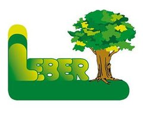

Kontakte
+43 664 882 90 900
cmbf.so@gmail.com
Allgemeine Informationen
Betriebszeiten
Montag - Frreitag von 09:00 - 12:00 Uhr, 13:00 - 18:30
Samstag - Sonntag von 09:00 - 12:00 Uhr, 14:00 - 18:30
Gäste unbedingt anmelden unter 0664/882 90 900 oder 0664 27 49 623 oder Mail an info@cmbf.at
Addresse
Salsach 24
Salsach 8483
Österreich
A big thank you to our supporters


